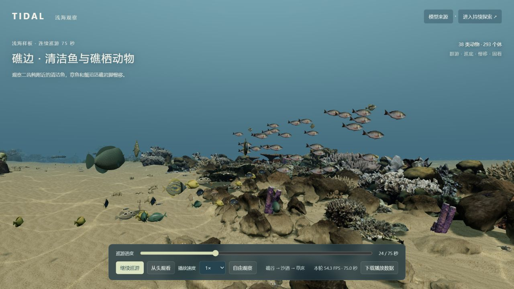

连续地形、光照水色、生境过渡
已有生成与环境表现真实感仍未达纪录片标准PRODUCT ATLAS / 01一片可观看、
一片可观看、
可探索、
可观察生命的海。
目标是纪录片式的海底世界。
冻结原型已上线，
可直接观看样板与探索海域。
当前定位 已上线 · 可演示与探索的原型

01 目标与进度→02 世界与生命→03 观看与探索→04 结果与边界
01
我们要实现什么？
目标分解 · 不用一个完成百分比掩盖差异
鱼群、底栖、附着生物与海草藻林
目录与代表群落已接入并非所有种类同时出现沿探索生成，回访保留当地状态
已实现分区生成与保存240 秒生命路线按完整实播单独验收跟随观察、条件实验、资源与行为
已有定性生态模型尚非科研级生态预测02
同一个产品，两种体验
样板的验收结果，不能直接代表整个持续探索世界
A / 浅海样板已实景验收 · 已冻结
75 秒，看当前集中呈现的效果
293只动物38个展示类别1条固定巡游
礁谷 → 沙道 → 草床。自然形态礁基、扫描珊瑚、鱼群与近底动物，组成一段有限场景；可暂停、跳播、变速和转动观察。
最新资产升级主要集中于此 看浅海样板
B / 持续探索世界功能已接入 · 验收范围不同
沿着海床，继续走进不同生境
3大生境67个导演章节持续按需生成
新浅海、海带林、深海软底，以及保留的原浅礁入口。群落按底质、水深和空间出现，提供自由移动、生态实验和本机保存。
整体画质与跨区体验仍有差距 进入持续探索
A 的“进入持续探索”→B 的生命巡游样板的 38 类 ≠ 浅海目录的 106 条；资产升级未自动覆盖全部入口。
03
世界里已经有什么？
地貌 × 植被 × 动物 · 分层分布，而非将全部元素堆在一个画面

浅海礁区与草甸
106 目录条目礁墙 · 台地 · 沙沟 · 草床 · 外坡
水层：礁鱼、鱼群、鲨、魟、蝠鲼、海龟。
近底：章鱼、乌贼、虾蟹、螺、海星、海胆、海参。
附着与植被：珊瑚、海绵、海葵、贝类、海草。

温带海带林
24 目录条目岩底 · 林下 · 藻间 · 冠层 · 空地
水层：岩鱼、海藻鱼、竹荚鱼、豹鲨、鱿鱼、水母。
近底：海胆、海星、鲍、石鳖、藻蟹。
附着与藻类：巨藻、翼柄藻、珊瑚藻、海绵、海鞘。

深海软底与水层
15 目录条目沉积平原 · 缓坡 · 岩露头 · 离底水层
近底：海猪、鼠尾鳕、海蜘蛛、蛇尾、海胆。
附着：海葵、海百合、黑珊瑚。
水层：小飞象章鱼、鼬鳚、冠水母、吸血乌贼、红糠虾。
目录含动物、珊瑚及藻类等代表条目，不等于 145 个精确鉴定且同时可见的物种。以上图像均来自项目实景记录；历史截图仅展示当时外观。
04
已有能力如何连在一起？
从海床空间，到生命活动，再到可观察、可保留的结果
有起伏、有通道、有栖息位置
不规则礁体、连续海床、沙面脊槽、礁脚碎石、草丛与裸沙间隙；附着物按岩面落地，动物按活动净空布置。
稀疏探索物：沉木、灌水沉底玻璃瓶。沙形与扰动是视觉及几何近似。光、水色与运动共同塑造环境
水深光衰减、水色与雾、沙面焦散、悬浮颗粒、局部扬沙、植物随流摆动；深海以观察器照明观看。
可调时刻、水流、浑浊度与补给；未求解真实水动力或砂粒输运。群游、觅食、依附与巡游
鱼群共同转向与间距、近底爬行、固定附着、海龟巡游与换气；部分个体已接入接近食点后摄食和独立记录。
样板以编排动作为主；持续探索的行为与食物记录更丰富，非每类均完整。条件变化能进入资源与行为
初级生产、藻食、浮游摄食、滤食、碎屑利用与分解回流；观察能量、库存、摄入和部分捕食关系。
使用相对资源与小型食物代理；不代表所有可见动物间的完整食物网。边走边生成，离开后可再回来
种子与坐标决定分区景观；近处加载、远处释放，后台预备相邻区。保存个体身份、资源和当地演化记录。
本机存储；卸载区暂停演化，回访续接。无云端同步或全球离线演化。看见、理解、跟随、留存
生物图鉴、点击个体档案、跟随、环境实验、生态读数、探索手记、返回标记点、截图、录像与数据导出。
录像最长 45 秒，依赖浏览器支持；截图与录像记录 3D 画面。底质 / 水深 / 净空→群落分布→条件与资源→个体活动 / 收支→观察 / 保存 / 回访
05
从哪里进入，怎样观察？
推荐顺序：先看效果，再看能力，最后自己探索
接管移动，跟随一个个体
退出自动巡游，WASD 移动、Q/E 下潜/上浮、Shift 加速；拖动转向、右键平移、滚轮靠近。
点击动物 → 档案 → 跟随；打开环境实验或探索手记，留下观察记录。打开礁谷探索06
已经得到什么结果？
证据范围：浅海样板 v1.0 · 最终一次本机浏览器实播

75.01s1× 完整播放，无暂停/跳播
54.31FPS平均帧率 · 全程分辨率缩放 1.0
25.0ms95% 帧间隔 · 最长 54.2 ms
6.10s本地导航至播放 · 已有素材缓存
89 个不同定向检查有通过记录（87 + 2）
构建通过 · 捕获 error / warn 为 0 / 0
07
阶段结论与完成边界
阶段性产物已固定；是否开启下一阶段，由新的有限目标决定
可用于演示、探索与有限观察
75 秒浅海样板 + 多生境探索原型 + 导演导航 + 生态观察工具 + 本机状态保存。已有源码、素材来源、静态构建、验收记录和冻结版本包。
纪录片真实感与全局稳定性未达标
裸岩与重复扫描、部分动物模型感；稳定 60 FPS、5 秒内启动未达标；跨区、其它设备及冷加载缺完整验收；繁殖与远区持续演化未实现。
冻结原型已上线
既有冻结能力与产品导览已发布，场景资产和行为保持。免费可再分发素材中含署名、非商业与相同方式共享条件，不能统一视为可无条件商用。